This manual will cover the Pattern and Color project for Design Studies 120. The purpose of this project is to practice the design concepts of pattern and color and to spend more working in Adobe Illustrator.
You will bring in an existing black-and-white shape into Illustrator, then make copies of it to create a pattern.
Then, you'll colorize the shape using 3 different color families.
Setting Up Your Workspace
Setting up a Grid in Illustrator
The first thing we need to do is set up our grid. This will help us arrange our patterns.
We will be working from a template file, which will save us a few steps setting up our projects for the pattern and balance portions. For this we will be using the Template.ai Illustrator file.
Open the Template.ai file in Illustrator.
Open Illustrator Preferences Windows: Edit > Preferences > Guides & Grid Mac: Illustrator CC > Preferences > Guides & Grid
Set the following options: Gridline every: 1 in
Subdivisions: 1
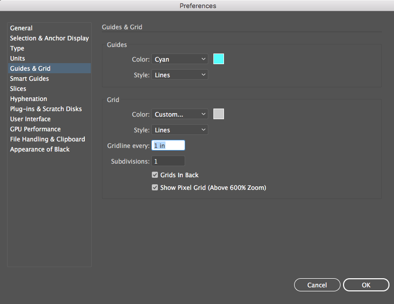
Click OK.
Click View > Show Grid to make the grid visible (Shortcut: Ctrl/Cmd + ' )
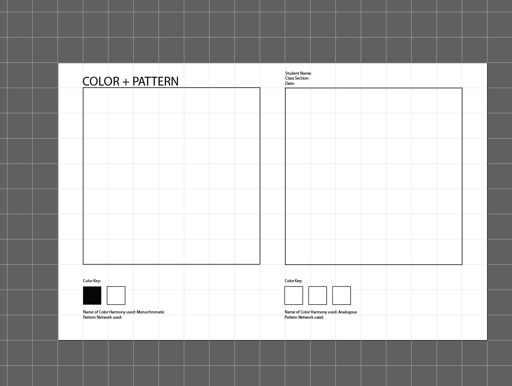
Bringing Shapes Into the Document
Importing Your Existing Shape
Next, we need to bring our existing shape into our project to use in our pattern.
Make sure you are on the correct Layer (Monochromatic) in your Template file. You can do this in the Layers panel, via Window > Layers
Open the Illustrator file with your prepared shape (if you do not have your shape available, use our sample file, SampleShape.ai).
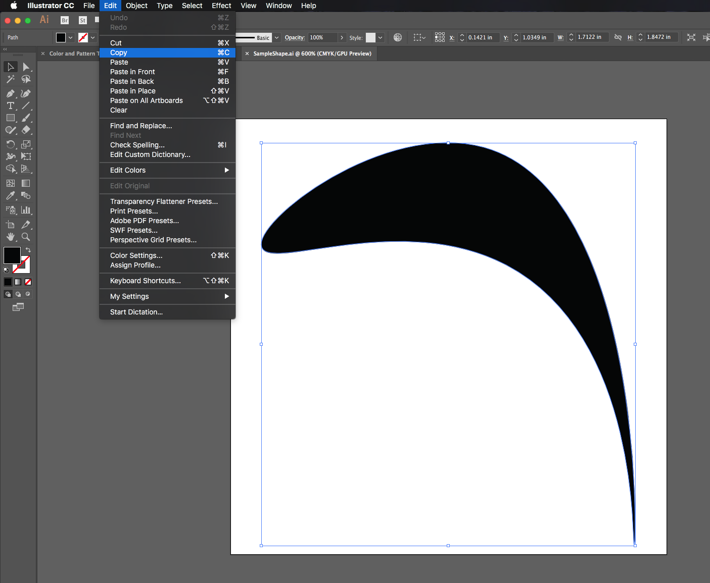
Select the shape in your Illustrator file and Copy it using Edit > Copy (Shortcut: Ctrl/Cmd + C)
Go back to the Template file and Paste the shape into your workspace via Edit > Paste (Shortcut: Ctrl/Cmd + V)
Drag the shape into box furthest to the left, and resize it so that it fits within a 1x1 block on your workspace grid.
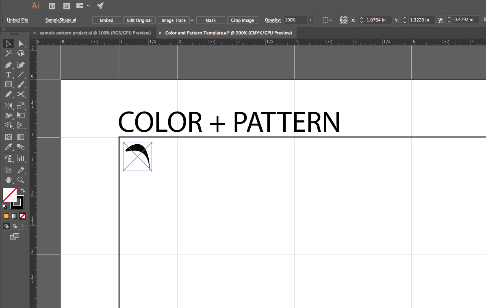
Arranging Your Shape
Using the Select tool (V), resize and reposition your shape to start creating your pattern.
To resize the shape, drag the grab handles on the corners and sides of the shape’s bounding box. If you hold Shift while dragging, it will keep the height and width proportional. If you hold alt/option while dragging, it will resize from the center of the shape rather than the edge.
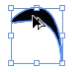
To quickly make additional copies of your shape, while you have the Selection tool (the black arrow) selected, hold the alt/option key until you see two small arrows, one black and one white, and drag your shape.
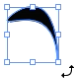
To rotate your shape, with the Selection tool selected, move your cursor just outside the corner of the shape’s box until it turns into a curved, two-sided arrow. Drag until it is rotated the direction you’d like.
After arranging, you should have a single cell ready to be copied for your pattern:
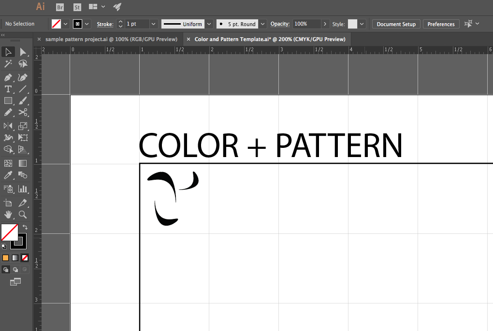
Repeating Shapes to Create Patterns
Creating Rows and Columns
Once you’ve arranged your shape into the “cell” that you’d like to repeat for your pattern, you’ll make copies of the shape and arrange them according to one of the pattern layout grids:
Square
Brick
Half-drop
Diamond
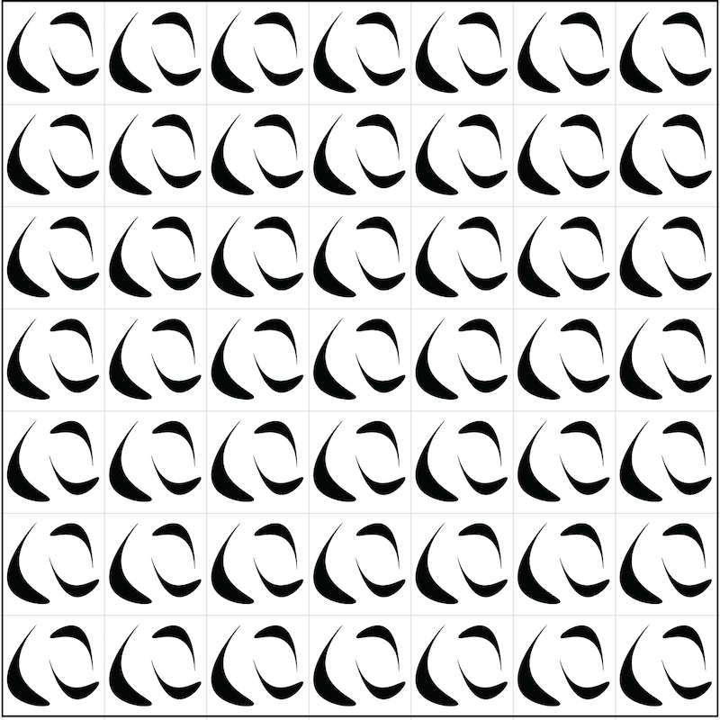
Square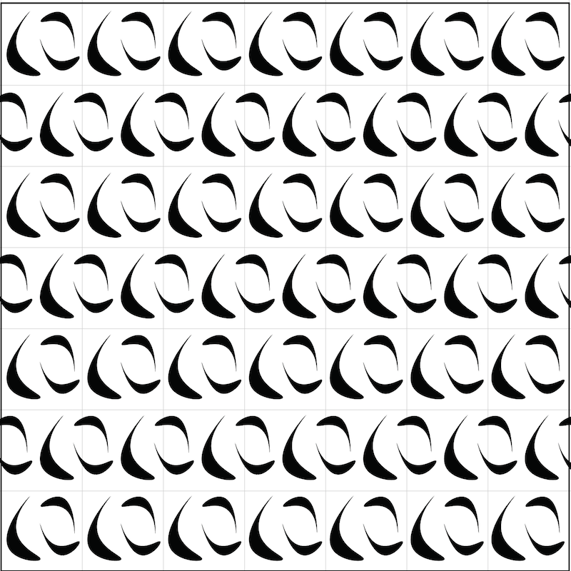
Brick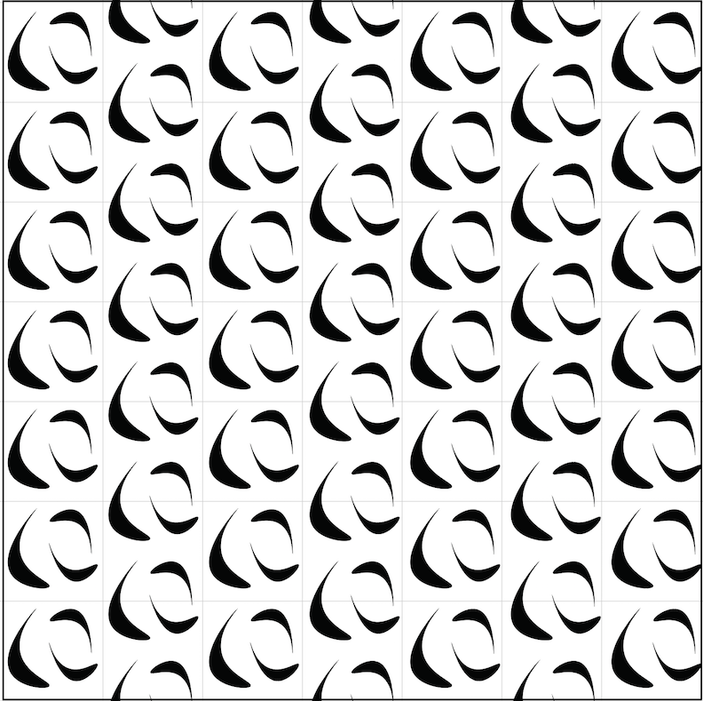
Half-Drop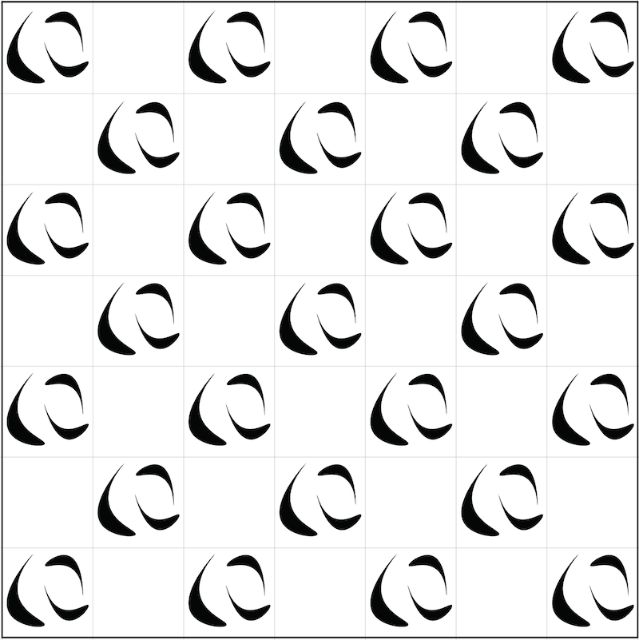
Diamond
Select all shapes in your block
Group them with Object > Group (Shortcut: Ctrl/Cmd + G)
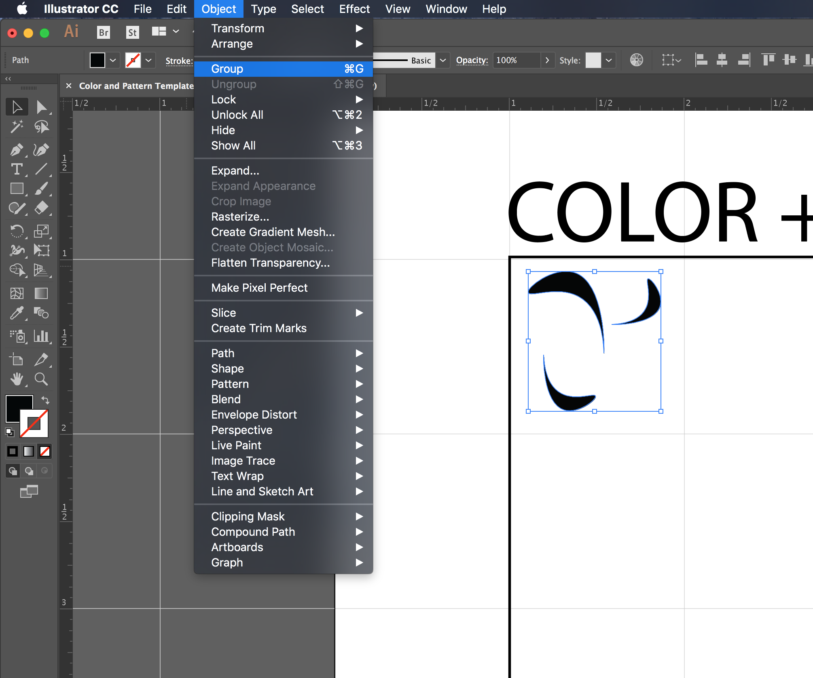
alt/option and drag to copy the grouped items
Repeat until you have a full row of copies
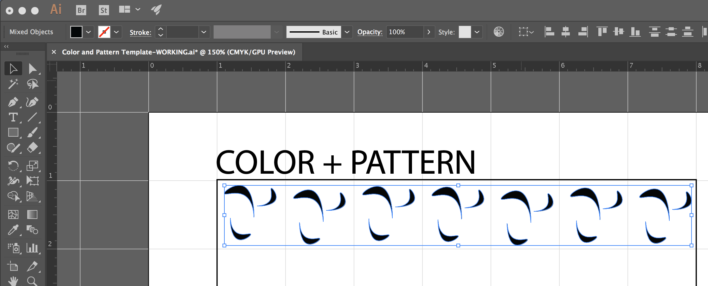
With your shape selected, use the Alignment tools at the top of the screen to distribute your images. If they are not on screen, go to Window > Align
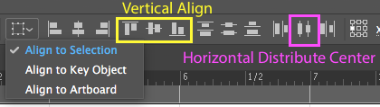
Make sure Align To Selection is enabled.
Use the Align and Distribute tools to evenly distribute the shapes. Use Horizontal Distribute Center to space them out evenly in a horizontal fashion, and the Vertical Align options to align them vertically.
If you do not have "Align To Selection" selected, your shapes will align in unpredictable ways.
Select all copies and group with Object > Group (or Cmd + G, Ctrl + G) to make the row itself a single item
Copy The Row Until You Have Filled The 7x7 Box With A Pattern
Hold alt/option and drag your grouped row of objects to create 7 copies, filling the 7x7 grid
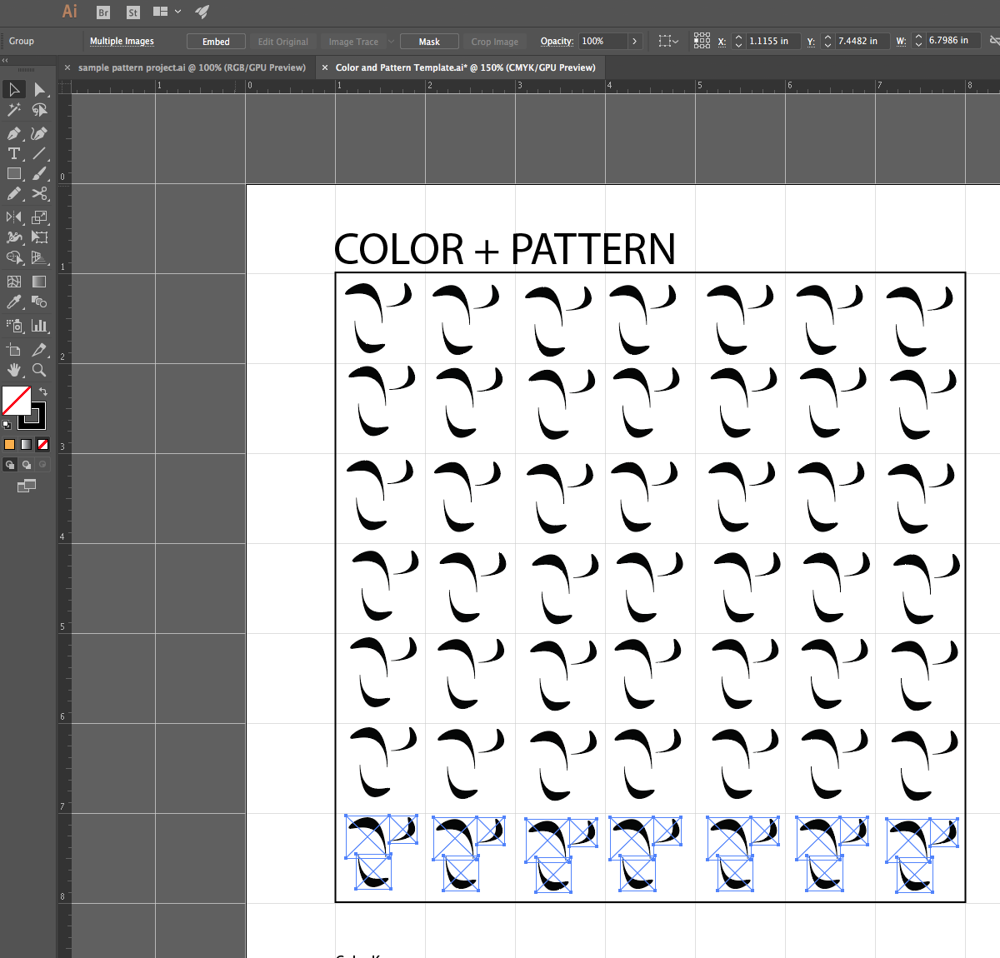
Use the Vertical Distribute Center tool to evenly distribute the items along the grid.
Using Clipping Masks to Hide Overflowing Shapes (optional)
If you use the half-drop or brick patterns, you will have an extra copy of your shape (8 total, rather than 7) which will make the row extend past the bounds of the box on the template.
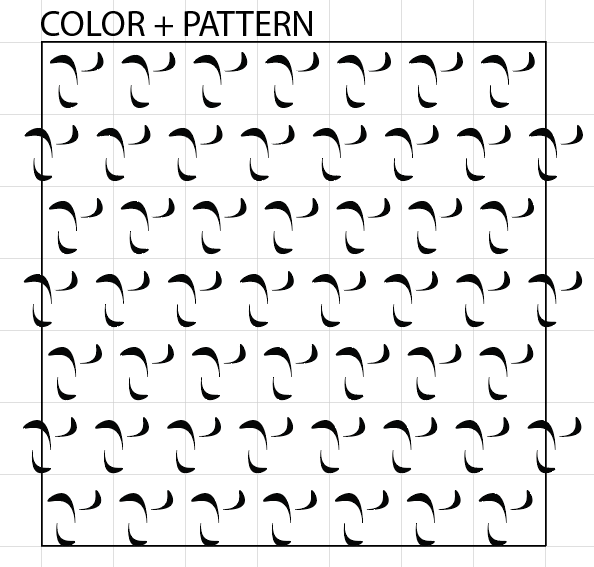
To address this, you'll use a technique called a Clipping Mask.
A Clipping Mask involves creating an object/shape that sits in front of other objects, and using that object's shape to become the "frame" or mask through which the objects beneath it are visible.
The object that serves as the mask becomes transparent, although you can still apply a stroke or other styling options to it.
Before making a Clipping MaskAfter making a Clipping Mask
Making a Clipping Mask
To create a Clipping Mask, you'll need to first create a shape, then select it plus the items you wish to be visible through underneath it, and then finally make the mask.
Draw a square using the Square tool (Shortcut: M). It should match the edges of the template project square exactly.
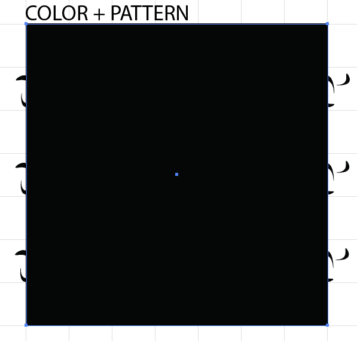
For a clipping mask to work, the clipping shape needs to have a fill color.
If the fill color is set to 'None', it will not clip any shapes below it.
Select the square, and then select all of your pattern shapes below it (including those extending outside the square).
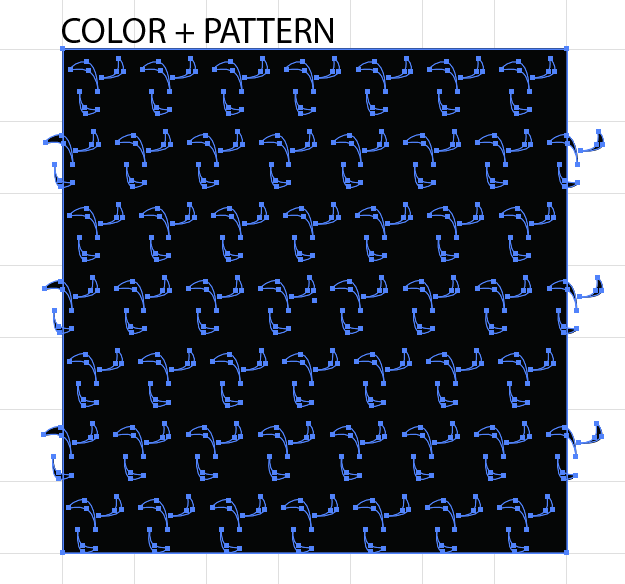
Choose the Object > Clipping Mask > Make command from the Object menu.
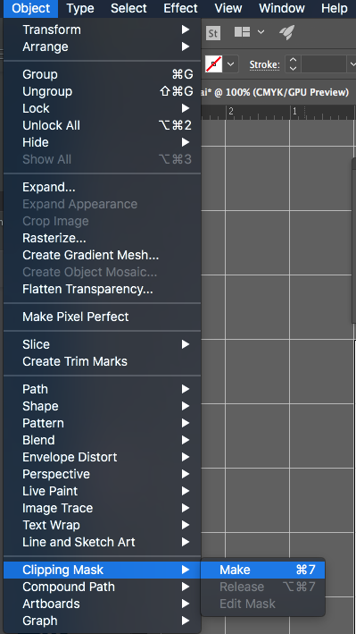
Your pattern should now be successfully clipped by the box you created.
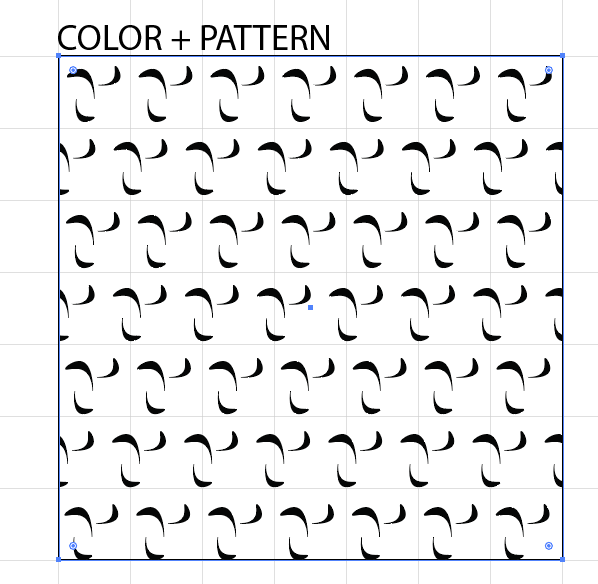
Once clipped, you can still edit all of the items within that group as well as the surrounding box. They now exist as a special group in the Layers panel, called a Clip Group.
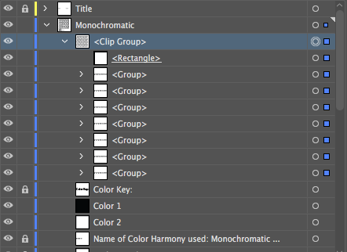
Group and Move the 7x7 Grid To the Other Boxes
After creating your monochromatic (Black and White) pattern, we will copy this shape to the other squares in our template so that we can apply color swatches to it, using three other color harmonies.
Select all items and Group them (Object > Group, Shortcut: Ctrl/Cmd + G)
alt/option + drag to copy the group of shapes into the next artboard.
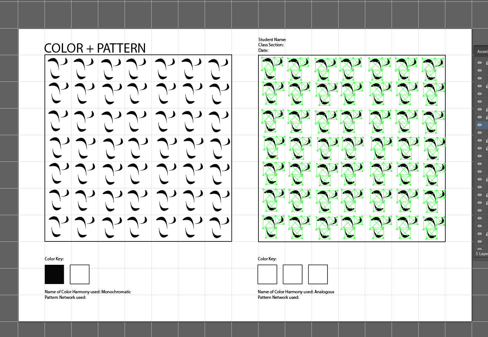
After you have copied your shape in the workspace, be sure to drag the group to the correct layer of the project template.
This will make keeping track of each section much easier.
After copying, be sure to drag the selected group into the correct sub-layer in the Layers panel.
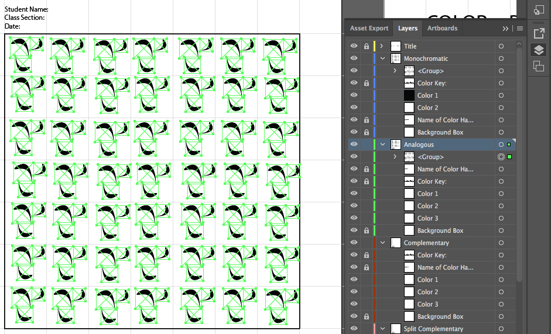
Working with Color
Create Color Swatches for the Color Harmony Rules
Next, we're going to create the color swatches that we will use to apply color to our shapes, using the color harmony rules you've learned about.
First, we'll create Swatch Folders, which will make it easier for us to keep track of which color swatches are which.
Open the Swatches panel (Window > Swatches)
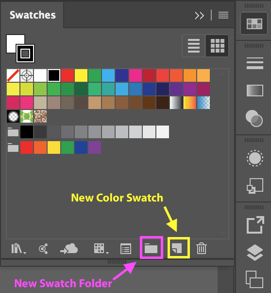
Create a new Swatch folder and title it Analogous.
Create two more Swatch folders: Complementary, and Split Complementary
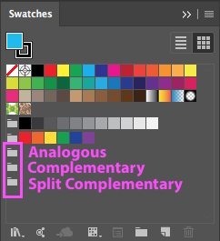
After creating the folder, click the Analogous Swatch Folder icon to select it. Now, any new color swatches you create will be saved right to this folder. (You can see the name of the folder by hovering over it, or by changing to a List view in the Swatches panel).
Create a new Swatch using the New Swatch button.
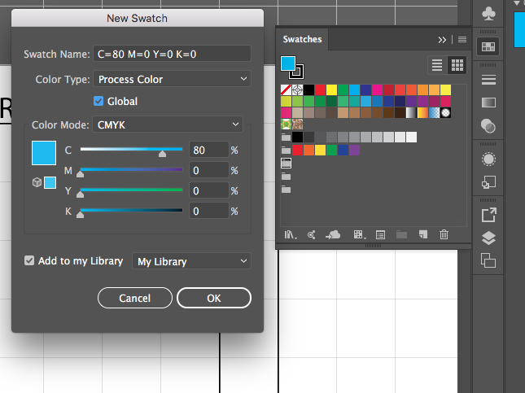
Mix your color using the sliders and be sure to check the Global checkbox (this makes it so that any shapes using this swatch will automatically update if you change the color swatch. Global swatches have a small triangle in the lower right corner).
Click OK. The new swatch should be in the new folder you created. If it is not, simply drag the new swatch to your swatch folder.
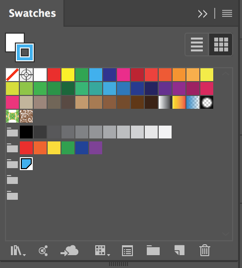
Use your color wheel to find swatches for the following, and create them in the respective Swatch folders: Analogous: Base color plus two analogous colors Complementary: Base color plus two complementary colors (to create a third color, make a lighter tint or darker shade of your main complement) Split Complementary: Base color plus two split complements
When you are done, you should have 3 Color Swatch Folders, each with 3 colors following the color harmony rules.
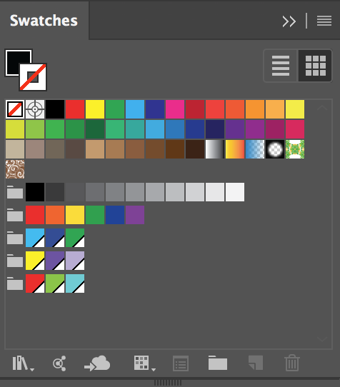
Color Your Patterns Using the Color Swatches
It will be much easier to apply your color scheme to your shapes if you first un-group all items in your pattern so you can select them individually.
Select the entire pattern, then ungroup them with the Object > Ungroup command (Shortcut: Cmd/Ctrl + Shift + G). You may need to do this multiple times, for each individual group within your pattern.
Once all items are ungrouped, select the parts of the pattern that you’d like to apply a swatch to.
To select multiple items at once, hold the Shift key and click on each item you’d like to add to the selection.
Be sure you’re using the Selection tool (the black arrow, shortcut V) when you make your selections.
With the items selected, click the dropdown next to the Fill box and choose the color you’d like to apply.
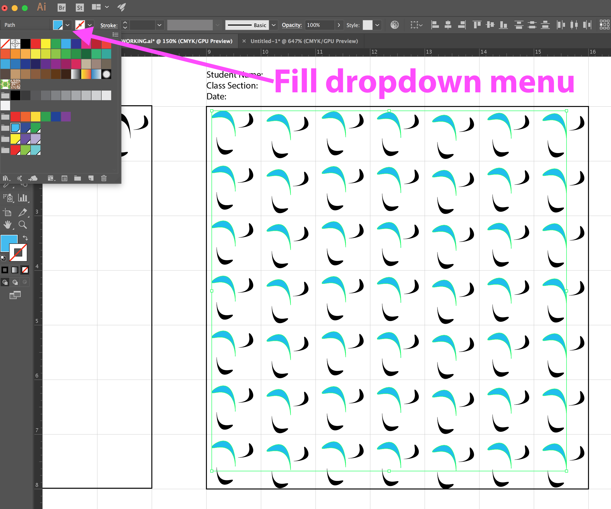
Repeat for all parts of your shape, using the swatches in your Color Swatch Group.
When you are done coloring your shapes, it’s time to add color to the background box.
By default, this object is locked in our template file. To unlock it, go to the Layers panel and locate the “Background Box” item for that color group’s layer and click the lock icon next to the name.
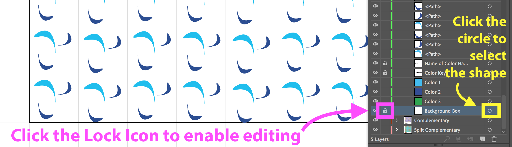
This will enable to you select the background shape and change its fill color. To select this box, click the circle on the right side of its slot in the layers panel.
Once you’ve selected the background box, apply a color swatch using the same technique.
After you’ve colored in your pattern, unlock the Color boxes in your layer and apply the color swatches for the colors used in that pattern.
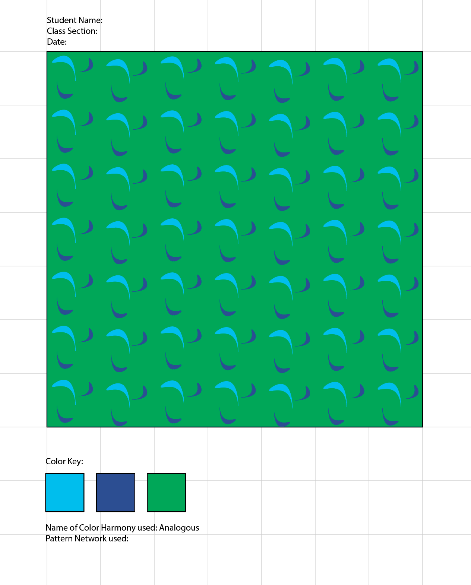
Repeat for the other two patterns until all 4 pattern boxes have color swatches applied.